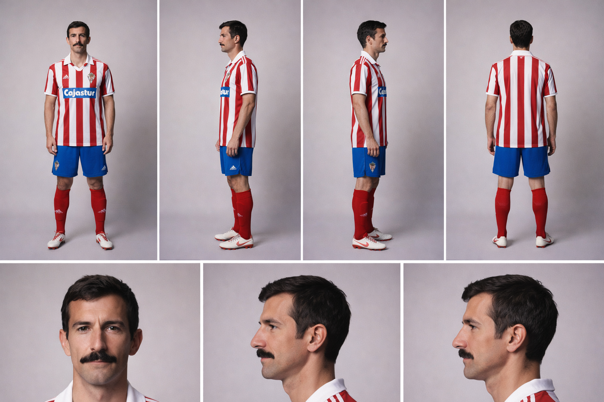
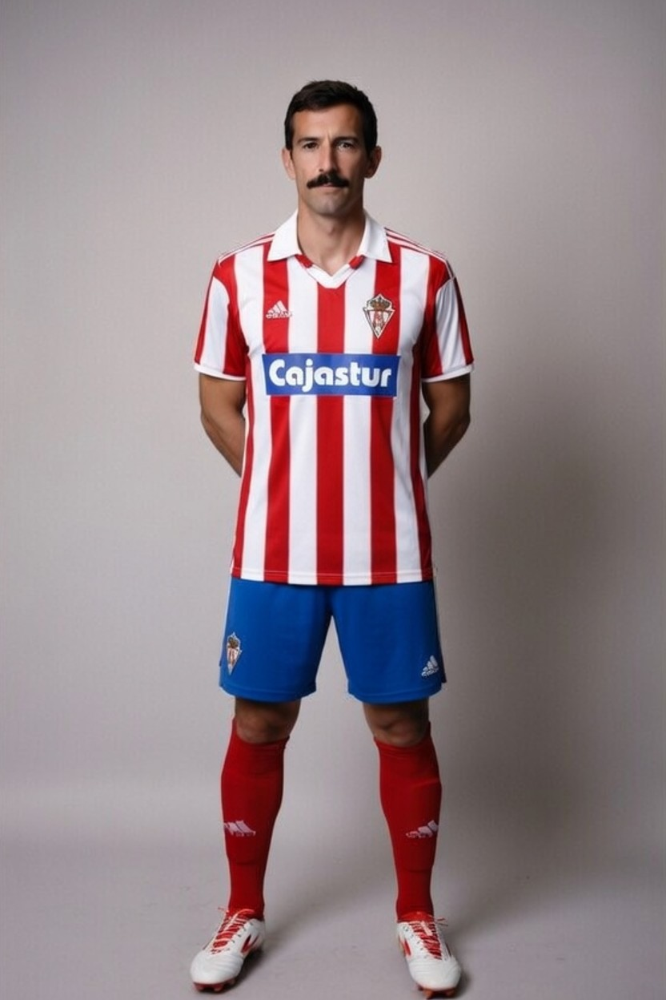

Joaquín
Guión
Hola, soy Joaquín Alonso, y si tengo que resumir mi vida en el fútbol, inevitablemente tengo que hablar del Sporting de Gijón, el club de mi tierra y el club de mi vida.
Nací en Asturias en 1956, y como muchos niños de mi generación, empecé a jugar al fútbol en la calle, en los patios, con lo que teníamos. Desde muy joven supe que quería dedicarme a esto, aunque nunca imaginé todo lo que viviría después.
Con el paso del tiempo fui creciendo como futbolista en el entorno regional, hasta que llegó el momento más importante de mi carrera: dar el salto al primer equipo del Sporting. Recuerdo perfectamente esa etapa. Era joven, tenía ilusión, pero también mucho respeto por lo que significaba vestir esa camiseta.
Mis primeros partidos en Primera División fueron especiales. Todo era nuevo para mí, pero poco a poco fui encontrando mi sitio en el equipo. No era el jugador más rápido ni el más llamativo, pero sí entendí algo muy importante: el fútbol también se gana pensando, ordenando y trabajando para el equipo.
Con los años me fui consolidando en el centro del campo. Empecé a tener más responsabilidad, más minutos, y finalmente llegué a ser capitán. Para mí fue un orgullo enorme, porque significaba representar no solo a mis compañeros, sino también a toda la afición.
Los años 80 fueron probablemente los mejores de mi carrera. Vivimos una etapa muy bonita en el Sporting. Éramos un equipo competitivo, que podía mirar a cualquiera de frente, incluso a los grandes de la liga. Jugamos partidos inolvidables y conseguimos cosas importantes, incluso participando en competiciones europeas en algunos momentos.
Mi papel en el equipo era claro: intentar dar equilibrio, ordenar el juego y ayudar a que el equipo funcionara como una unidad. Siempre he pensado que el centro del campo es el corazón de un equipo, y yo intentaba que ese corazón latiera con ritmo constante.
También tuve la suerte de ser internacional con la selección española. Fue un orgullo enorme, porque representar a tu país es algo que no se olvida nunca, aunque mi etapa allí no fuera muy larga.
Lo que más valoro de mi carrera es algo que no siempre se ve desde fuera: la continuidad. Estuve muchos años en el Sporting, en el mismo club, defendiendo la misma camiseta. Hoy en día eso es menos habitual, pero para mí fue una decisión natural, porque sentía que ese era mi sitio.
Me retiré en 1990, después de más de una década en el primer equipo. Fue un momento emotivo, porque cerrar una etapa tan larga en el club de tu vida nunca es fácil. Pero me fui con la sensación de haberlo dado todo.
Hoy, cuando miro hacia atrás, no pienso solo en partidos o resultados. Pienso en la gente, en el vestuario, en el estadio, en la afición que siempre estuvo ahí. Y si tengo que decir algo, es esto: he tenido la suerte de vivir el fútbol donde siempre quise, en mi casa, en el Sporting de Gijón.
Hoja de referencia

Personaje
